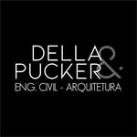
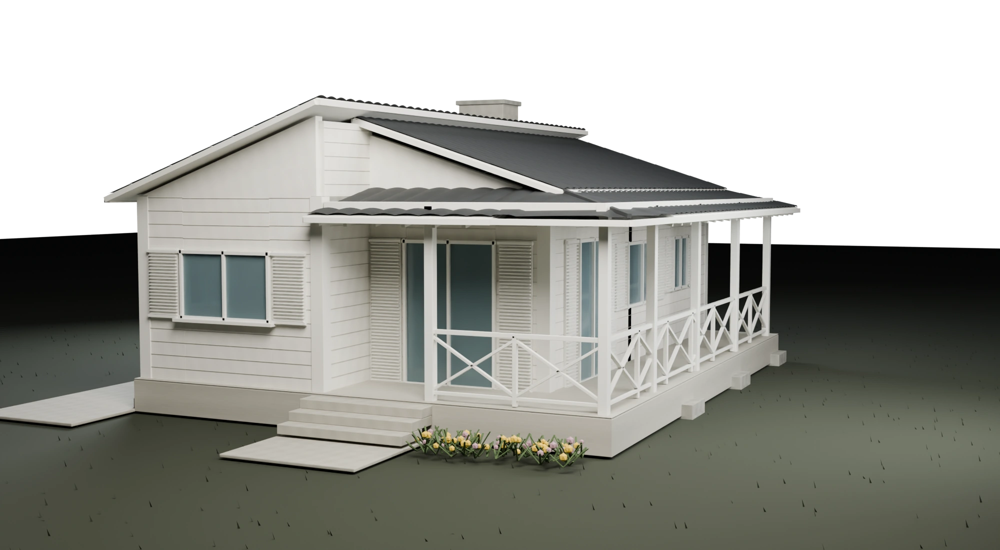

Projetos
Arquitetura para definir os espaços. Engenharia para desenvolver as soluções técnicas que dão suporte à construção.
CONCEPÇÃO + TÉCNICA
Solicitar orçamentoDELLA & PUCKER CRICIÚMA · SC
Arquitetura e engenharia civil em Criciúma.
Projetos, regularização, execução e visualização 3D.
Role e acompanhe a construção

O espaço que você imagina.
A técnica para construir.
02 / ÁREAS DE ATUAÇÃO
Da definição dos espaços à execução da obra: conheça os serviços de arquitetura e engenharia civil da Della & Pucker.
Arquitetura para definir os espaços. Engenharia para desenvolver as soluções técnicas que dão suporte à construção.
CONCEPÇÃO + TÉCNICASeu imóvel já existe? Converse sobre a situação atual e entenda quais demandas de regularização podem ser atendidas.
IMÓVEL + DOCUMENTAÇÃODo projeto ao canteiro: atuação na execução de obras, com serviços e responsabilidades definidos conforme a necessidade.
PROJETO + OBRAVisualize volumes, materiais e a relação entre os ambientes antes da obra, por meio de representações tridimensionais do projeto.
ESPAÇO + VISUALIZAÇÃO03 / PROJETOS PUBLICADOS
Um recorte do trabalho apresentado no perfil da empresa.

Proposta arquitetônica para unidades de locação, explorando a implantação no lote.
Ver publicação do projeto ↗
Representação do projeto estrutural em concreto armado de uma residência.
Ver publicação do projeto ↗
Render da residência com área coberta ao redor do espaço social. Referência para o estudo tridimensional desta prévia.
Ver publicação do projeto ↗04 / O PRIMEIRO CONTATO
Construir, regularizar ou visualizar um projeto? Conte o que você tem em mente. Se já houver um terreno, imóvel ou obra, mencione a situação para iniciar a conversa com a equipe.
Conversar sobre meu projeto